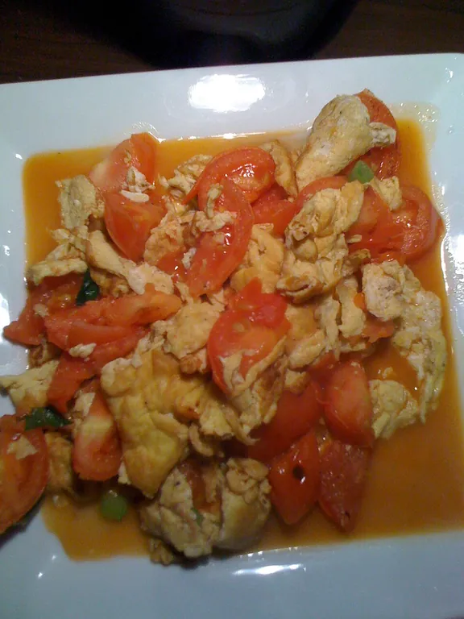
番茄炒鸡蛋
Godofnanjing · Tomato and eggs.JPG · CC BY-SA 3.0
第 3 步 · 炒软番茄
保留分开烹调顺序；不采用油冒白烟或含糊的大勺盐量。本版中火、油不冒烟，盐先少后补。
核对原页与实际步骤
下厨房 · 猫厨房 · 番茄炒蛋
鸡蛋先炒盛出，番茄另煮出汁后合炒。
App 步骤 原锅加余油，中火炒番茄并加一小撮盐。炒到边缘变软、铲子轻压就出汁；锅干而番茄还硬，沿锅边慢慢加 1–2 汤匙水，调小火稍焖，别硬烧。
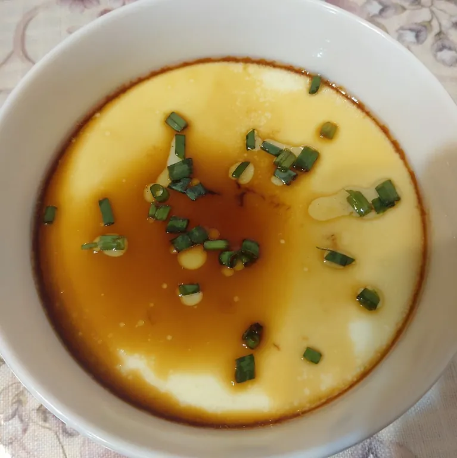
家常蒸蛋
HowToCook 菜谱贡献者 · 鸡蛋羹 · Unlicense
第 2 步 · 盖盘蒸蛋
保留本版蛋液与水 1∶1.5、宽浅碗和中心熟度检查；不照搬原文 2 倍水，也不把 15 分钟当通用熟透保证。
核对原页与实际步骤
下厨房 · 楼一一一 · 水蒸蛋（只要掌握三点，做出光滑特别简单）
蒸碗覆盘，锅中水沸后再入锅蒸。
App 步骤 碗上盖耐热小盘挡住滴水，放稳在蒸架上。蒸锅水开后放入，盖锅盖，转中小火让水持续轻轻沸腾、不猛烈翻滚。先蒸约 10 分钟再检查，别频繁开盖；留意锅水，不能烧干。
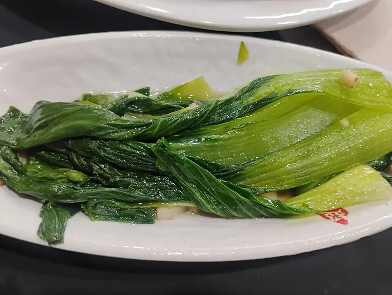
清炒小白菜
Ralff Nestor Nacor · Stir Fried Bok Choy, Aug 2025.jpg · CC BY-SA 4.0
第 2 步 · 大火炒菜
粗梗切细再先下锅，菜叶等梗开始变软再下；大份量用小锅时分批炒。
核对原页与实际步骤
下厨房 · 瞬间777 · 清炒小青菜
作者把菜帮和叶分开，蒜碎出香后先炒菜帮。
App 步骤 锅里加油，中火热到油容易流动，不等冒烟。姜蒜有则小火炒到闻见香味，先下厚梗翻炒，再下叶。转中大火不停翻动，铲不开就分批，不把叶子硬压在锅底。
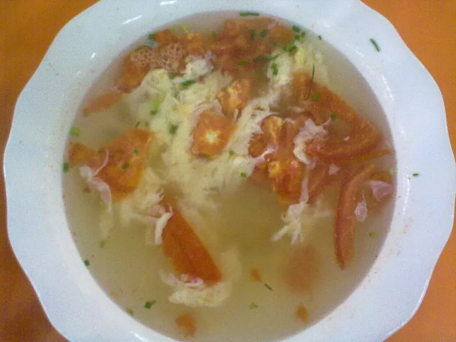
番茄蛋花汤
NNU-10-HanRongrong · Tomato and egg soup.jpg · CC BY 3.0
第 3 步 · 淋蛋花
小灶用清汤底，小滚时细流淋蛋；先让蛋花凝住再推动汤勺。
核对原页与实际步骤
下厨房 · 欢欢早安 · 番茄蛋花汤
番茄炒出红汁后加水，原方勾薄芡再分次倒蛋。
App 步骤 调成小滚，蛋液绕着锅细细淋入，等蛋丝变色定形再轻推。煮到没有透明生蛋液、蛋花完全凝固，再尝汤补盐，有葱最后撒。别为了蛋花好看而提前关火。
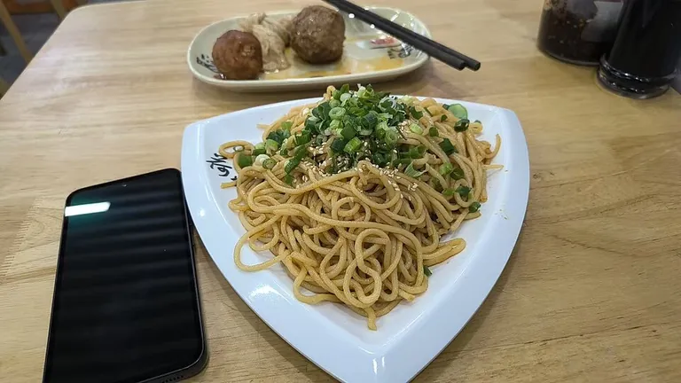
葱油拌面
Suginami · 葱花葱油拌面.jpg · CC0
第 2 步 · 煸葱油
本版做热拌面，用普通生抽，不要求虾籽酱油。葱段粗细不同，加葱绿后先检查薄的葱尖。
核对原页与实际步骤
下厨房 · Ray-小单味 · 苏式葱油拌面
葱白先下锅，葱绿后放，利用余温出香。
App 步骤 油和葱白先入锅，小火慢煸，葱白变软再加葱绿。闻到葱香、葱边变金褐色就把上色的先夹出；细葱尖先夹出，厚葱段继续煸；夹出的葱还有余温，上色会再深一点。
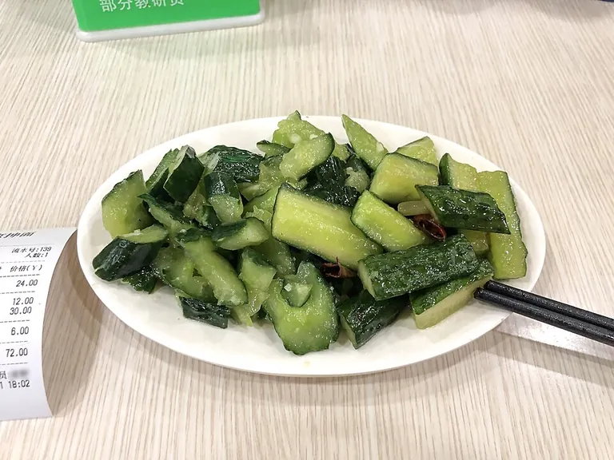
蒜香拍黄瓜
N509FZ · Smacked cucumbers at Changranju Restaurant, Beijing (20210501180457).jpg · CC BY-SA 4.0
第 1 步 · 拍黄瓜
不照搬原料栏与正文不一致的盐量，也不用薄刀重拍。生抽先少放，额外盐可省，喜欢甜味才加少量糖。
核对原页与实际步骤
下厨房 · 下厨房用户_geqhb（小羽私厨） · 拍黄瓜
拍裂后切成入口小块，先调汁再拌。
App 步骤 黄瓜洗净擦干，切掉两端。放入干净食品袋，在稳固砧板上用擀面杖轻敲到裂开，再取出切一口块，别用薄刀猛拍。蒜切末；所有器具要干净，不能刚切完生肉就直接拌凉菜。
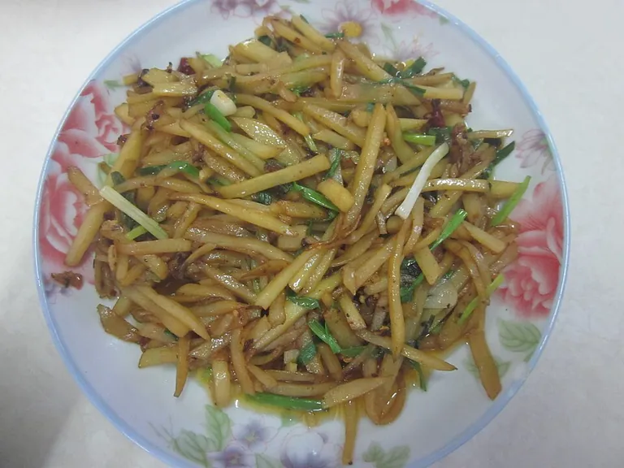
酸辣土豆丝
Huangdan2060 · Hunan cuisine, vinegar potato wire.jpg · CC BY 3.0
第 1 步 · 切丝冲洗
只参考清洗与状态观察；本版仍保留短焯后炒熟的路径，不是原文免焯水版本。半透明只是线索，还要检查较粗的一根没有生硬粉芯。
核对原页与实际步骤
下厨房 · 黄漫漫 · 不用焯水一样炒出脆脆的酸辣土豆丝
切丝后洗去表面淀粉，炒至半透明，醋分次加入。
App 步骤 土豆去皮，先切一个平面放稳，再切约 2–3 毫米均匀细丝；用刨丝器时护住手。清水冲掉表面淀粉。入沸水略焯约 10 秒就捞出沥干，这只是预处理，稍后仍要炒熟。蒜、青椒有才切。
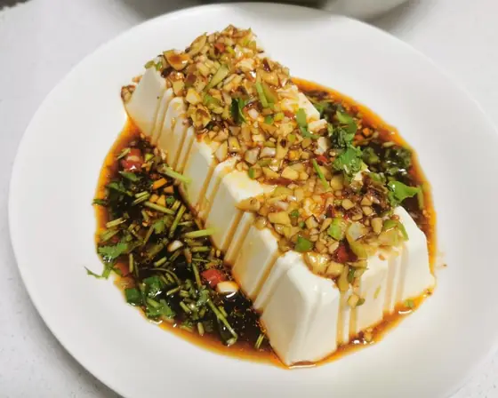
家常凉拌豆腐
来源于下厨房 · 半生瓜 · 凉拌豆腐，爽口下饭超简单 · 非商业转载说明
第 3 步 · 淋汁
豆腐先按包装要求加热，再把盘底的水沥掉；蘸汁从半份开始，避免嫩豆腐拌碎。
核对原页与实际步骤
下厨房 · 半生瓜 · 凉拌豆腐，爽口下饭超简单
内酯豆腐装盘沥水，另碗调好醋和生抽再淋。
App 步骤 豆腐放干净浅碗，温热时就能淋汁吃，不必在室温放到冰凉。葱、辣椒油可省。用勺从碗边轻推，别大力搅；想吃凉的及时放冰箱冷却，临吃再拌。
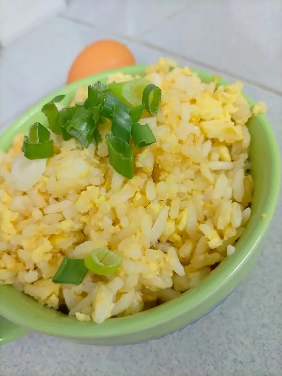
家常蛋炒饭
Euniceyeoh07 · Chinese egg fried rice.jpg · CC BY-SA 4.0
第 2 步 · 炒蛋和饭
先把妥善冷藏的熟饭拨散；饭多就分批炒热，葱绿留到出锅时撒。
核对原页与实际步骤
下厨房 · 张记小灶 · 家常蛋炒饭：只用鸡蛋葱花，炒出高级感
葱白和葱绿分开，蛋液底面定形后划散，再把饭团炒开。
App 步骤 锅里加油，中火到油能流动但不冒烟。蛋液下锅，轻推成柔软小块就加饭。用铲子侧边拨开饭团、翻到锅底均匀受热，不用使劲压碎米粒；一次只炒这一碗，锅装太满就分批。
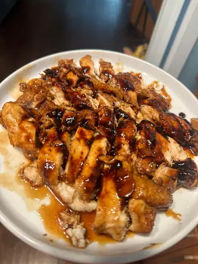
蜜汁鸡丁
来源于下厨房 · 三宝妈家常菜 · 照烧鸡胸肉 · 非商业转载说明
原作者同用鸡胸肉、蜂蜜和酱油，先煎再收汁，装盘前切成小段。本版先切丁再煎。
第 3 步 · 蜜汁煮透
小灶把蜂蜜留到煎鸡丁之后，避免甜汁先焦；酱汁已稠而肉心未达 74°C 时，加水继续煮。
核对原页与实际步骤
下厨房 · 厂尌 · 黑椒蜜汁鸡胸肉
原作者先给鸡胸肉裹蜜汁，煎到两面上色后补水盖锅焖煮。
App 步骤 倒入调好的蜜汁，煮开转中小火，让小泡持续冒起，翻动使每块都裹汁。用食品温度计从侧面测几块最大鸡丁，中心达到74°C；不足就补一点水继续煮并复查。鸡肉熟后才尝汁，淡了少量加生抽、太甜且有柠檬可挤几滴柠檬汁。小火收到汁薄薄挂住肉就停，不必收成糖浆。
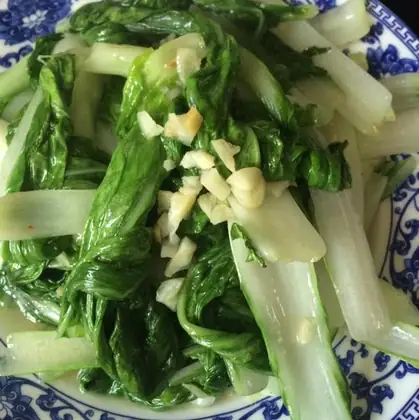
蒜蓉小白菜
来源于下厨房 · 王77 · 蒜蓉小白菜 · 非商业转载说明
第 2 步 · 炒蒜下菜
备菜时把洗好的白菜放漏篮；闻到蒜香就下厚梗，留出余地下叶，不必等蒜末变褐。
核对原页与实际步骤
下厨房 · 王77 · 蒜蓉小白菜
作者先控干白菜，蒜末刚出香时就下菜。
App 步骤 油入锅，中小火下蒜末，闻见蒜香、颜色仍浅时立刻下菜梗，随后放菜叶。调至中大火翻动；不把蒜炒到棕黑，也不让空锅冒烟。小锅装不下就分两批。
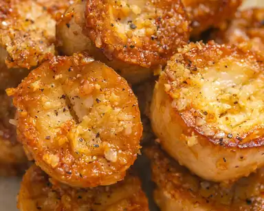
黄油酱香杏鲍菇
来源于下厨房 · 蜜桃厨房小主 · 〖黄油蒜香杏鲍菇〗 · 非商业转载说明
第 2 步 · 煎熟
本版用薄片，只在贴锅面上色、能轻推时翻面；黄油留到末段低火拌香。
核对原页与实际步骤
下厨房 · 蜜桃厨房小主 · 〖黄油蒜香杏鲍菇〗
厚切杏鲍菇先煎出金黄表面，再把菇拨开，加入黄油和调味。
App 步骤 平底锅加少量食用油，中火铺单层菇片，留些空隙，分批煎。先让接触锅底的一面定住、出现金黄斑点再翻；两面上色、菇片变软可弯时盛出。锅太满会先出水，不会马上变焦香。
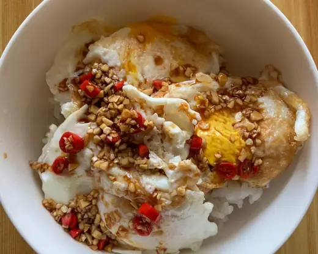
酱油煎蛋饭
来源于下厨房 · 耿直李大妈 · 松兰（老式）拌饭 · 非商业转载说明
原作者的拌饭用了多颗煎蛋和辣椒。小灶按一人份煎蛋、淋酱油汁。
第 3 步 · 淋酱汁
将酱汁调稀、分次拌入热饭，本版让蛋白和蛋黄充分凝固后再盖到饭上。
核对原页与实际步骤
下厨房 · 耿直李大妈 · 松兰（老式）拌饭
原方盖锅煎蛋，另碗用酱油和少量水调拌饭汁。
App 步骤 先把熟蛋放饭上，锅中有葱可炒软。生抽先用部分，兑所列2汤匙水，小火煮开；糖和料酒可省。先淋一点酱汁拌着尝，再决定加多少，别把一杯饭泡成咸汤。
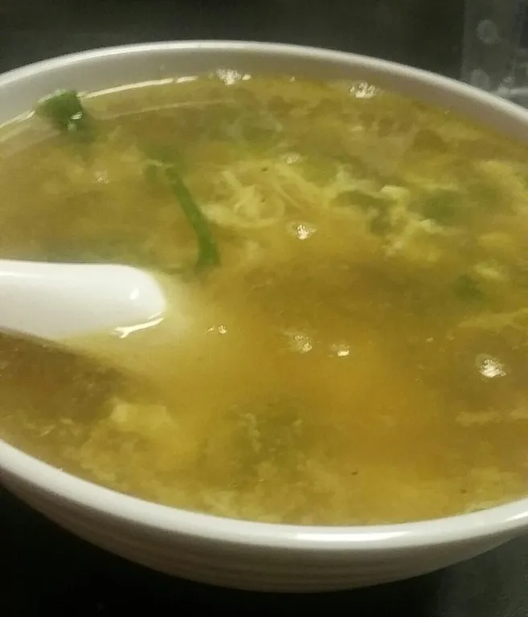
清香蛋花汤
NeoBatfreak · Egg drop soup (蛋花湯).jpg · CC BY-SA 4.0
第 3 步 · 淋蛋与出锅
用清汤也能出蛋花：水面仅轻轻翻动，蛋液细流入锅，凝成絮状再推开。
核对原页与实际步骤
下厨房 · 王雪岩1984 · 一碗漂亮又鲜嫩无比的基础蛋花汤
作者把蛋液充分打散，锅开后调小火，慢慢倒入。
App 步骤 蛋液绕圈细细倒入，先停手等边缘凝固，再轻轻拨散。保持加热至蛋花全部熟透、没有透明生蛋液。尝味补一点盐，香油几滴就够，香菜按喜好放。
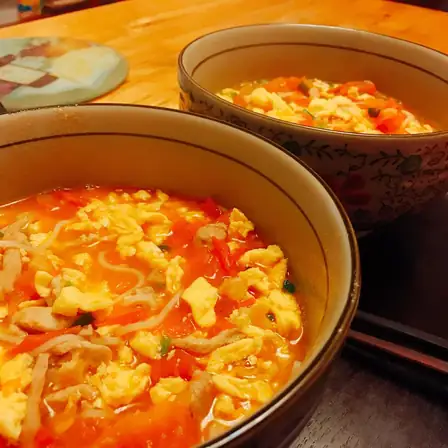
番茄蛋花汤面
来源于下厨房 · PauCifer · 番茄鸡蛋汤面 · 非商业转载说明
第 2 步 · 煮番茄面
小灶直接在番茄汤里煮面；先炒软番茄再加水，面条吸汤后用少量热水调稀。
核对原页与实际步骤
下厨房 · PauCifer · 番茄鸡蛋汤面
原作者先炒出番茄红汁，另一锅煮面，再合锅调味。
App 步骤 少油中火炒番茄，有蒜可先短炒出香。番茄塌软出汁后加约600毫升水，煮开下面，边煮边拨散，按包装煮到无硬芯。吸水后太稠逐次补热水；高汤只替换等量水，不另加一份。
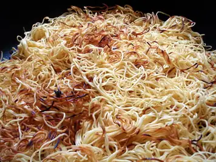
香辣两面黄
joyosity · Pan-fried Noodles · CC BY
煎面成品实拍，可对照面条的金黄焦边。原图未注明调味，小灶版另拌辣油酱汁。
第 2 步 · 煎两面
只借鉴煎面；本版拌辣味调料。摊薄后等底面结壳再翻，整张难翻时分块操作。
核对原页与实际步骤
下厨房 · 呤儿 · 韭黄肉丝两面黄
两面黄的面条先沥水、整形成薄饼，在平底锅中将两面分别煎黄。
App 步骤 平底锅薄铺油，中小火把面铺成薄层，先别来回翻。用铲轻抬边缘，底面有金黄色、能整体松动再翻；不便整张翻就分成两三块翻面，两面金黄即可。
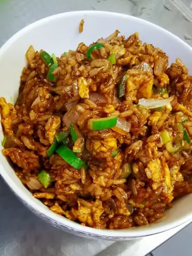
酱油炒饭
来源于下厨房 · 吖铭 · 酱油炒饭 · 非商业转载说明
第 3 步 · 酱油调味
小灶先炒松热饭，再把酱油分次拌开；饭粒已均匀着色就先尝咸淡。
核对原页与实际步骤
下厨房 · 吖铭 · 酱油炒饭
作者先把酱油调料与米饭拌匀，再与洋葱、鸡蛋合炒。
App 步骤 每批先加部分生抽，翻匀尝味。鱼露、蚝油同样有盐，有用就减生抽；老抽糖料酒葱按喜好加，不必凑齐。冷饭复热用食品温度计确认各处至少74°C，热透后即出锅，不为追求深色一直加酱油。
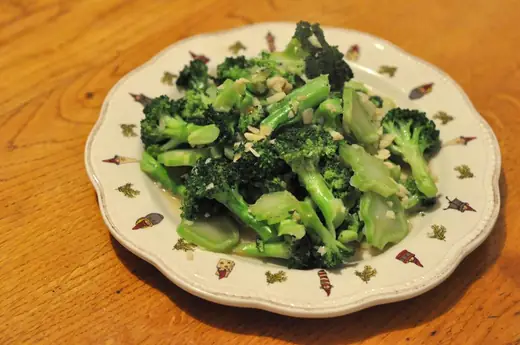
蒜香西兰花
来源于下厨房 · 机器猫姑娘 · 蒜蓉西兰花 · 非商业转载说明
第 3 步 · 蒜汁
本版把蒜香料汁另锅煮开浇菜，沥去花球夹带的水，少量淋汁再尝。
核对原页与实际步骤
下厨房 · 机器猫姑娘 · 蒜蓉西兰花
作者先焯西兰花并沥干，蒜末出香后再炒菜。
App 步骤 锅内放油，小火把蒜炒出香味、仍浅色就倒入预调汁煮开。先淋一部分到西兰花，拌一朵尝味，再决定加多少；不是一定要把咸汁全部倒完。
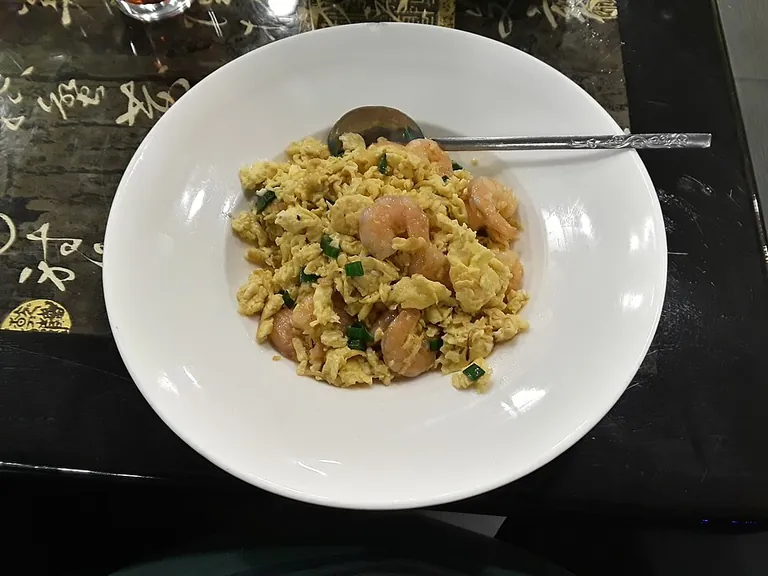
虾仁炒鸡蛋
Ser Amantio di Nicolao · Baby shrimp with scrambled egg.jpg · CC0
第 3 步 · 加蛋
新手先将虾炒熟再倒蛋，铲子从锅边往中间推；流动的蛋液完全凝固即可盛出。
核对原页与实际步骤
下厨房 · Sophiephie · 虾仁炒蛋
原方把虾仁与蛋液拌在一起，中火用铲慢推成滑蛋。
App 步骤 转中小火，锅底薄薄补油，再倒蛋液。边缘凝住后用铲子从底部往中间轻推，形成大而软的蛋块，让剩余蛋液流到锅底。虾拌在蛋块里，蛋液全部凝固、不再流动便出锅；有葱香油最后少量加。不要为了焦黄多炒，尝熟蛋后再补盐。
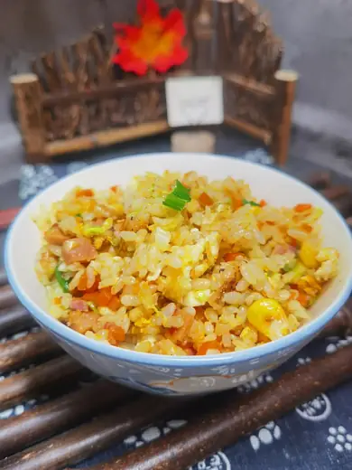
培根蛋炒饭
来源于下厨房 · Yang妈美食 · 培根蛋炒饭 · 非商业转载说明
参考培根、米饭和鸡蛋的成品外观，作者另加了蔬菜丁。
第 2 步 · 炒培根鸡蛋
本版省去牛肉末等配料。观察培根出油量再决定是否补油，米饭炒透后再补盐。
核对原页与实际步骤
下厨房 · Leoanan · 普通的蛋炒饭
原方小火煸培根出油，再用锅里的油炒配料和米饭。
App 步骤 少油中火炒培根，等脂肪析出、边缘微卷，按包装要求炒熟。油积成一滩就留够润锅的量，其余盛出。洋葱有则炒到半透明，再倒蛋液轻推成小块，别把蛋炒干。
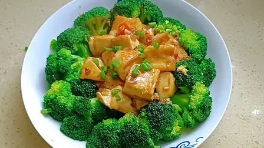
西兰花烧豆腐
来源于下厨房 · Z开芯 · 西兰花豆腐 · 非商业转载说明
原作者将西兰花摆在豆腐四周，小灶把两者合在锅里烧。
第 3 步 · 调味收汁
小灶将西兰花放进煎过豆腐的锅，加汤煮到厚茎熟软，最后才薄薄收汁。用铲背轻推豆腐保持完整。
核对原页与实际步骤
下厨房 · Z开芯 · 西兰花豆腐
原作者先焯西兰花，豆腐两面煎黄后加汁炖，轻推收汁。
App 步骤 老抽、糖、香油可省，料酒若用要在仍有汤时加入煮开。先尝咸度再补生抽。淀粉水重新搅匀后一点点加，汤汁煮开、略能挂住食材就停；不用淀粉可留清汁，不烧到干底。
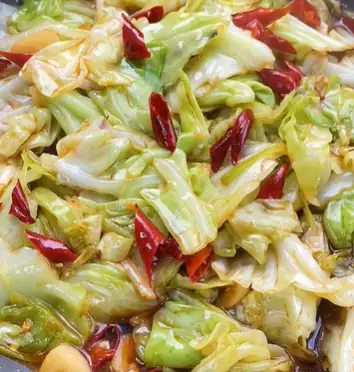
手撕包菜（素版）
来源于下厨房 · 执剑踏云 · 手撕包菜 · 非商业转载说明
第 1 步 · 撕包菜
参考撕小、先备调味和炒软后调味。小灶保留少盐起步、其他调料可省的素版，不叠加原文多种咸味调料，也不把小锅塞满。
核对原页与实际步骤
下厨房 · Cola_aa · 手撕包菜
包菜撕成小块，预先调汁，炒软后再加汁。
App 步骤 包菜去掉硬芯，叶子撕成约一口大小，厚叶脉切薄，洗净沥到不滴水。蒜、干辣椒有才准备；要用的调味先量好放手边。680 克菜体积很大，小锅请分两批，调料也分着用。
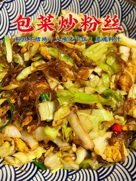
包菜炒粉丝
来源于下厨房 · 陈家胖胖青 · 包菜炒粉丝🔥不坨不结块，香到舔盘 · 非商业转载说明
第 1 步 · 泡粉丝
按粉丝包装先泡至可弯，一夹成团就用筷子拨松；入锅少量补水让粉丝吸汁。
核对原页与实际步骤
下厨房 · 陈家胖胖青 · 包菜炒粉丝🔥不坨不结块，香到舔盘
温水浸软粉丝后剪短，沥水，后入锅抖散与包菜合炒。
App 步骤 绿豆粉丝按包装泡到能弯曲、还有韧性，沥水剪短。包菜切细丝，粗梗切更薄并沥干；姜蒜葱干辣椒有才备好，另留约120毫升水备用。
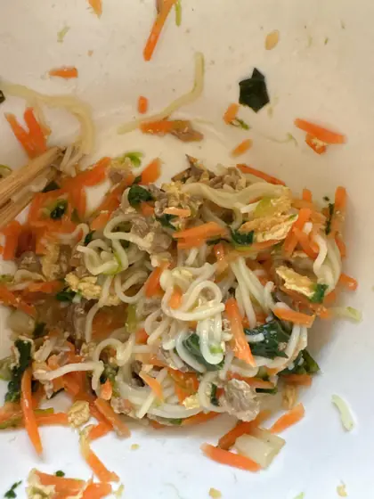
菠菜肉末拌面
来源于下厨房 · 皮卡喵 · 蔬菜牛肉拌面：儿童辅食 · 非商业转载说明
原作者同用菠菜、切碎牛肉与面条，另配胡萝卜丝和鸡蛋。
第 3 步 · 拌面
本版用牛肉末和菠菜，留一小杯面汤；肉末熟透后用少量面汤稀释肉汁再拌。
核对原页与实际步骤
下厨房 · Livvie · 肉末拌面
原作者分开炒肉末、煮面烫青菜，并留少量面汤帮助拌开。
App 步骤 熟肉里放部分生抽和一点面水煮开，再拌入面和菠菜，翻到均匀热透。尝一口再补生抽或盐；老抽、胡椒、香油、蜂蜜、辣椒油都是口味选择，不需要全加。
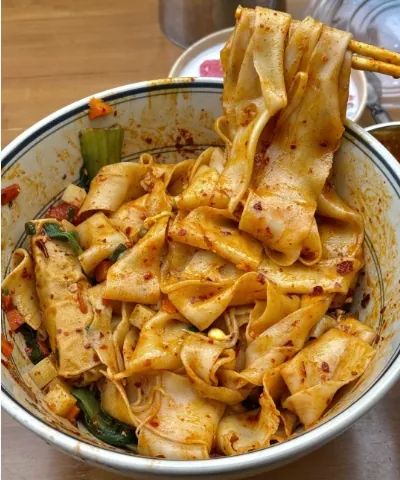
青菜油泼面
HowToCook 菜谱贡献者 · 陕西油泼面 · Unlicense
第 3 步 · 热油拌匀
用稳固耐热碗，先沥掉碗底积水；少量油淋向调料，拌匀后再决定是否补醋。
核对原页与实际步骤
下厨房 · 好食客小太阳 · 油泼面（家常简单版）
作者把煮好的面沥水入碗，把蒜末和辣椒面放在面上后泼油拌开。
App 步骤 小锅放油，中小火热到油面轻微波动、不冒烟就离火。身体避开碗口，靠近面上的辣椒碎小心慢淋，防止溅油。充分拌匀再尝盐；若不熟悉泼油，可把辣椒碎放温油小火短炒出香后一起拌面。
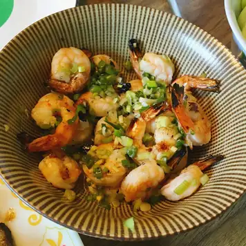
姜葱炒虾仁
Neven Mrgan · Ginger scallion shrimp · CC BY-NC-SA
第 3 步 · 调味出锅
小灶先用姜葱煸香再炒虾，调料提前量好。虾熟时加葱绿、翻到刚软就尝味，不必勾芡。
核对原页与实际步骤
下厨房 · 她是弯弯呀 · 葱姜炒虾仁
原作者先配好碗汁，煎虾仁后加葱姜，最后用料汁收尾。
App 步骤 下葱绿翻几下到刚软，盐先一小撮；喜欢酱香可改用少量生抽，别两样一起倒足。料酒有则沿锅边少量加并煮开，香油、白胡椒、糖均可省。尝一只熟虾再调整，够味就关火盛出。
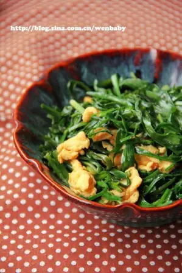
韭菜炒鸡蛋
来源于下厨房 · 文琦 · 韭菜炒鸡蛋 · 非商业转载说明
第 3 步 · 合炒
韭菜洗后沥干再切；韭菜变软才让鸡蛋回锅，一起热透即可。
核对原页与实际步骤
下厨房 · 文琦 · 韭菜炒鸡蛋
原作者先炒鸡蛋盛出，再快炒韭菜，合锅即盛。
App 步骤 余油先炒韭菜根段，再放叶段，翻到整体塌软、由生硬变柔韧。把蛋块放回，加少量盐轻翻；所有蛋液完全凝固、没有流动生蛋液时出锅，别为了等韭菜而一直煎蛋。
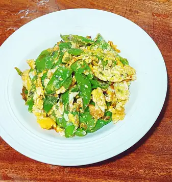
青椒炒鸡蛋
来源于下厨房 · 张记小灶 · 零失败青椒炒鸡蛋，5分钟快手下饭菜，家常味最香 · 非商业转载说明
第 3 步 · 合炒
本版先炒蛋盛出，再炒软青椒后合锅，为新手拆开控制熟度，并非复刻原法；厚壁椒要多给时间，不承诺零失败。
核对原页与实际步骤
下厨房 · xcf2019 · 青椒炒蛋 米饭杀手 下饭
原法将碎椒与蛋混合，中火摊开后炒至蛋液凝固。
App 步骤 补少量油，先炒青椒到有光泽、稍塌软，夹一块放凉尝，能咬断且没有生硬口感。再放蛋块轻翻到无流动蛋液，尝后补少量盐；糖只是可选的小撮，不必多放。
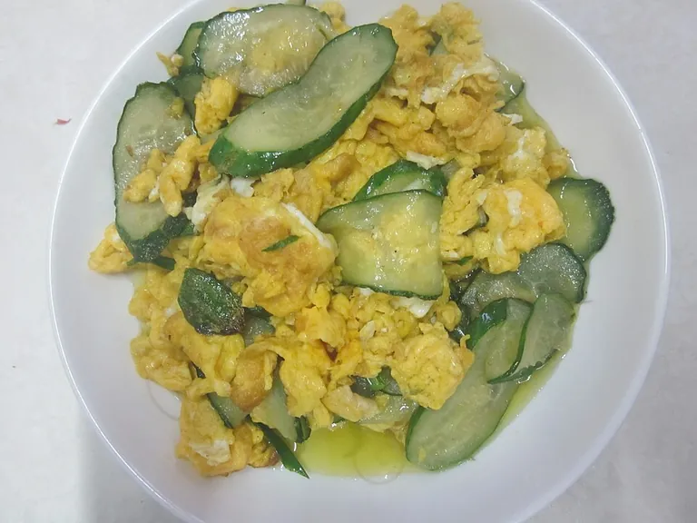
黄瓜炒鸡蛋
Huangdan2060 · Hunan cuisine, Cucumber fried with Eggs.jpg · CC BY 3.0
第 3 步 · 炒黄瓜
小灶把成块的蛋先盛出；黄瓜略软仍有形时回蛋，避免鸡蛋全程在锅里变干。
核对原页与实际步骤
下厨房 · 云姐的幸福日子 · 黄瓜炒鸡蛋
作者把黄瓜切薄片，蛋液先下锅，鸡蛋成块后再加入瓜片。
App 步骤 原锅加余油，黄瓜片翻炒到颜色稍深、边缘开始透亮，仍保留一点脆。放回蛋块，加少量盐，翻到蛋液完全凝固后立刻出锅。鸡精可省，不把黄瓜炒到软烂才停。
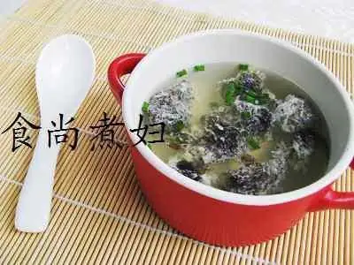
紫菜蛋花汤
来源于下厨房 · 食尚煮妇 · 紫菜蛋汤 · 非商业转载说明
第 3 步 · 淋蛋液
小灶把两者分开下：先让紫菜舒展开，再往小滚的汤中细流淋蛋，形成较薄的蛋花。
核对原页与实际步骤
下厨房 · 食尚煮妇 · 紫菜蛋汤
原方将撕碎的紫菜泡进蛋液，再分团放入热汤。
App 步骤 转小滚，将蛋液绕圈缓缓淋入，蛋花定形后再轻推。继续加热到全凝固、无透明蛋液，尝后补盐；有香菜最后撒，别让汤长时间大滚把蛋煮老。
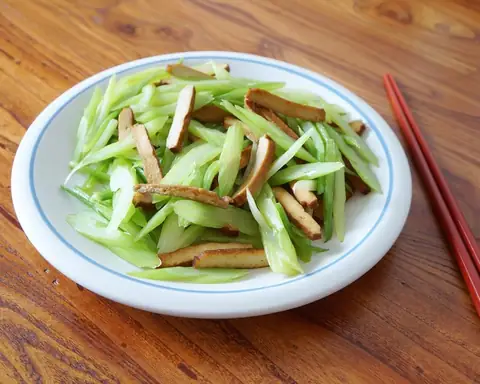
芹菜炒香干
来源于下厨房 · 米二乔 · 芹菜炒香干（豆腐干） · 非商业转载说明
第 1 步 · 切配
粗芹菜梗顺长剖细再切段，香干切成相近长度的条。两者炒熟后再尝味，按香干本身的咸度补盐。
核对原页与实际步骤
下厨房 · 米二乔 · 芹菜炒香干（豆腐干）
原方给芹菜去筋、斜切成片，香干也切片再与芹菜同炒。
App 步骤 芹菜洗净，粗茎纵切细再切约 3 厘米段；香干切相近长度的条，先看包装是否要求加热。青椒蒜有才切。若用淀粉，用少量凉水调开，别把干粉直接撒锅里。
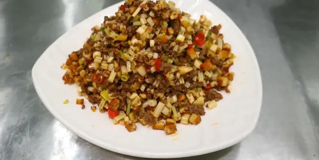
肉末香干炒芹菜
来源于下厨房 · 美食作家王刚 · 芹菜炒肉末（完成装盘步骤） · 非商业转载说明
原作者将牛肉末与香干丁、芹菜丁同炒。小灶使用猪肉末。
第 3 步 · 炒蔬菜
本版先拨散并炒熟肉末，再放香干和芹菜；切成接近大小的小粒，能均匀裹上肉汁。
核对原页与实际步骤
下厨房 · 美食作家王刚 · 厨师长教你：“芹菜炒肉末”的家常做法，味道很赞，非常下饭
作者把香干和芹菜切细粒，牛肉末与香干先炒，芹菜后下。
App 步骤 下芹菜和香干翻匀，让香干沾上肉汁。沿锅边加少许水，炒到芹菜颜色亮、能轻易咬断但仍有脆感，香干内部也热透。尝味后才补盐；花椒粉喜欢就少撒，别盖住芹菜香。
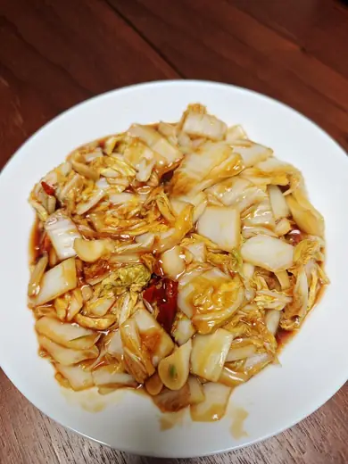
醋溜白菜
来源于下厨房 · 圆圆圈_ · 醋溜白菜 · 非商业转载说明
第 2 步 · 炒白菜
厚帮切薄先炒，叶片软下来后再合醋汁；汁刚裹匀就盛盘，避免白菜久煮出水。
核对原页与实际步骤
下厨房 · 圆圆圈_ · 醋溜白菜
作者把白菜帮叶分开，帮的边缘略透后加叶，再倒预调醋汁。
App 步骤 锅中少油，中小火把葱炒香，先下白菜帮翻到边缘微透，再下叶。保持翻动到叶子塌软、厚帮能咬断。花椒粉有且喜欢可加；锅里已有菜汁就不用再加很多水。
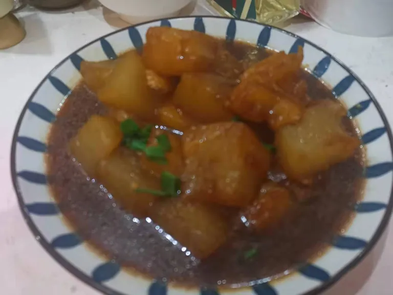
红烧冬瓜
HowToCook 菜谱贡献者 · 红烧冬瓜 · Unlicense
第 3 步 · 收汁
省去花刀和多种酱料，冬瓜切匀即可。盖锅时看软硬，开盖时看挂汁，两个时点分开判断。
核对原页与实际步骤
下厨房 · 古贝私厨 · 红烧冬瓜
去皮去瓤切块，盖锅焖软，开盖后收汁。
App 步骤 有青椒此时放入，煮到稍软且没有生硬口感。开盖看汤汁：还有很多就中火略收，用勺推开瓜块，盘底还留一点能拌饭的汁就停。尝味再决定是否加剩余酱油，不为颜色深而多加。
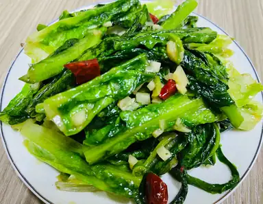
蒜蓉油麦菜
来源于下厨房 · naaaaaa · 蒜蓉油麦菜 · 非商业转载说明
第 2 步 · 炒蒜菜
小灶主取蒜香。蒜碎刚出香就下沥干的菜段，菜量大分批炒，以免蒜焦菜仍生。
核对原页与实际步骤
下厨房 · naaaaaa · 蒜蓉油麦菜
原方将油麦菜切段，先炒蒜末和辣椒等香料，再放菜翻炒。
App 步骤 锅里放油到能薄润锅底，中小火下蒜末，闻到香味但没变棕时先下梗，再放叶。调中大火翻动到叶子塌软、梗不再生硬。菜堆得翻不动就分批，不让下面的蒜一直焦着。
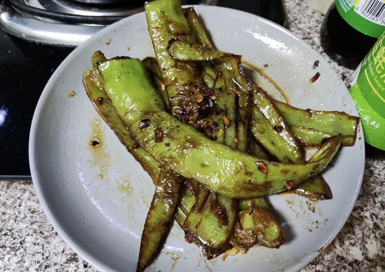
虎皮青椒
HowToCook 菜谱贡献者 · 虎皮青椒 · Unlicense
第 2 步 · 煎青椒
先观察贴锅面的皱纹，再决定何时翻面。生抽和醋只按本版的小份量起调。
核对原页与实际步骤
下厨房 · SuSu苏苏儿 · 虎皮青椒
青椒沥干，先煎出皱皮再加入蒜与调汁。
App 步骤 锅底薄薄一层油，中小火把青椒铺一层。用铲轻压让椒皮贴锅，先掀起一只看底面；有褐色斑点、椒皮起皱，再把这一批翻面。目标是零星虎皮，不是整片黑炭；油冒烟就减火，不往冒烟油锅里泼水。
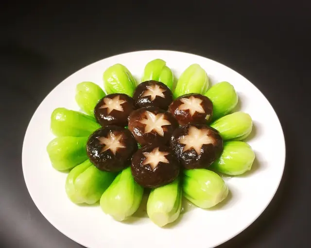
香菇油菜
来源于下厨房 · 五月孤芳 · 香菇油菜 · 非商业转载说明
第 2 步 · 炒菜炒菇
小灶让鲜菇充分受热再合菜；粗菜梗纵剖，不让已经软的菜叶陪着菇久煮。
核对原页与实际步骤
下厨房 · 五月孤芳 · 香菇油菜
作者将青菜和香菇分开处理，再合锅淋芡汁，菜梗比菜叶先入热水。
App 步骤 锅里少油，中火，有葱先炒香。油菜先炒到叶软、梗能戳入，盛出。原锅补少量油，下香菇片铺开翻炒，等出水后继续炒到菇片柔软、中心不再硬韧；不要只把表面烫热就合锅。
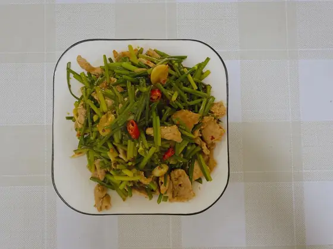
蒜苔炒肉丝
来源于下厨房 · 琥珀君W · 蒜苔炒肉丝 · 非商业转载说明
第 3 步 · 合炒
蒜苔先去老梗。咬不动的粗段可补少量水多煮片刻，把已熟的肉丝留到最后合锅。
核对原页与实际步骤
下厨房 · 琥珀君W · 蒜苔炒肉丝
原方将肉和蒜苔分次下锅，蒜苔入锅后补一点水煮软再调味。
App 步骤 原锅留薄油，蒜苔中火翻炒到颜色变亮、能弯折，尝一段无硬芯、无明显生辛味再放回肉丝。若炒干仍硬，可加少量水盖盖焖软再开盖。合炒热透后先尝再补盐，肉已熟就不必久炒。
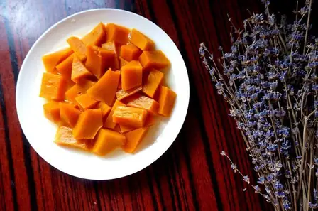
清蒸南瓜
来源于下厨房 · 小美的美食 · 营养蒸--清蒸南瓜 · 非商业转载说明
第 3 步 · 检查软度
挑盘中最厚的一块从侧面戳到中心；薄块先软时先夹出，余下继续蒸。
核对原页与实际步骤
下厨房 · 小美的美食 · 营养蒸--清蒸南瓜
原作者将南瓜切块装盘，等蒸锅水沸再入锅，用筷子检查软度。
App 步骤 开盖时让蒸汽朝远离身体的方向散开，用筷子戳最厚块的中心，能轻松穿透才取出。仍硬就确认锅内有水，继续蒸 3–5 分钟再查。关火后用隔热手套或夹盘器稳稳取盘，盘内积水很烫。
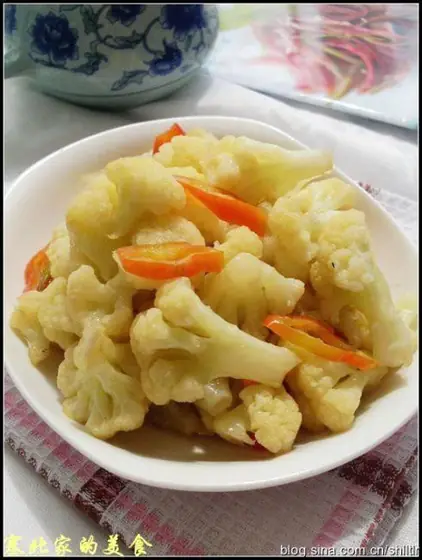
清炒花菜
来源于下厨房 · 塞北主妇 · 清炒菜花 · 非商业转载说明
第 2 步 · 焯花菜
把较粗花梗剖开，使它和小花朵同时受热；焯后捞一朵试梗，较硬的在炒后补水短焖。
核对原页与实际步骤
下厨房 · 塞北主妇 · 清炒菜花
原方掰花菜成小朵、焯水，再炒蒜片和花菜。
App 步骤 足量水烧到沸腾再下花菜，先煮约 2–3 分钟。夹一块粗茎检查，应从硬脆开始变软，但不用煮到一夹就碎；然后沥干，后面还要炒和短焖。
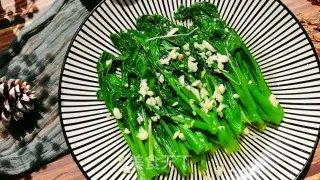
白灼菜心
HowToCook 菜谱贡献者 · 白灼菜心 · Unlicense
第 2 步 · 白灼
粗梗切段或剖薄再下锅，嫩菜心也可以整棵做；本版蚝油可省，料汁按口味分次淋。
核对原页与实际步骤
下厨房 · 美味虾卷 · 白灼菜心
菜心的梗端先受热，再烫叶片，最后单独做汁。
App 步骤 锅中水完全沸腾后加几滴油，先下菜梗约 1 分钟，再下菜叶继续煮。水量要让菜能浸到，不够就加水重新烧开。粗茎能被筷子戳入、叶软再捞出沥水；盐只在焯水时可选，不必用满。
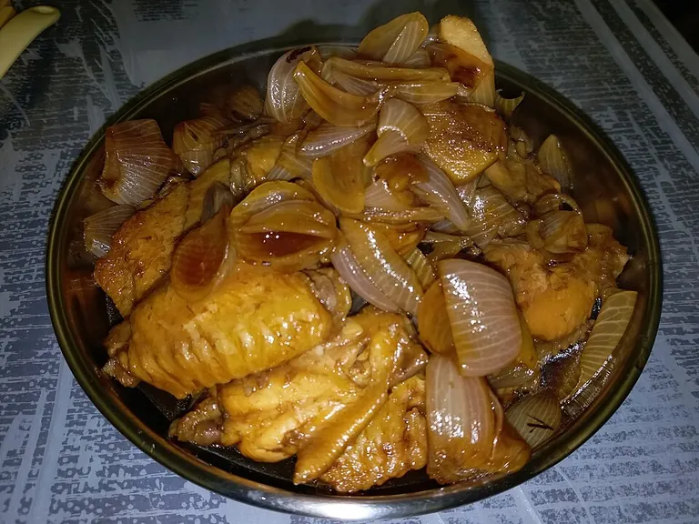
可乐鸡翅
Pauloleong2002 · Home made chicken wings with coca cola.jpg · CC BY-SA 4.0
第 3 步 · 煮熟收汁
借鉴先煎、再煮、后收汁的顺序；本版保留焯水预处理。最厚肉处须测到 74°C，再小火收汁，不能用酱汁浓度判断鸡翅已熟。
核对原页与实际步骤
下厨房 · yanyanfoodtube · 可乐鸡翅 Coca Cola Chicken wings
中小火煎上色，加可乐炖熟后再收汁。
App 步骤 翻动鸡翅使两面都浸到汁，用食品温度计测最厚肉处、避开骨头，几只最大的均达到74°C再收汁。先尝煮熟的汤汁，可乐已有甜味，糖通常不用加，盐和老抽也按需少放。转小火勤翻，汁能挂在翅上就关火，留一点汁比熬干保险。
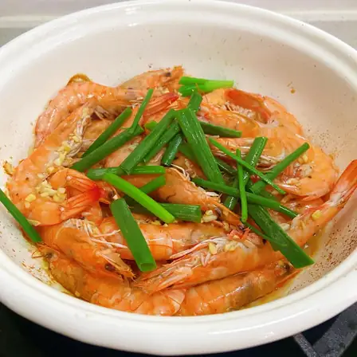
葱姜焖虾
来源于下厨房 · 陈西西-c · 姜葱无水焗虾 · 非商业转载说明
第 1 步 · 垫锅摆虾
本版用洋葱垫底、加少量料酒或水。单层铺虾，起蒸汽后调小火，锅底发干就沿边补水。
核对原页与实际步骤
下厨房 · 陈西西-c · 姜葱无水焗虾
原方在厚锅底铺姜蒜和葱，将虾均匀摊开，再盖锅焗。
App 步骤 洋葱切块、姜切片铺满锅底，选能盖严的厚底锅。虾清理后沥水，单层铺在上面；冻虾先冷藏解冻。生虾接触过的刀板、碗、手洗净，另备干净熟食盘。
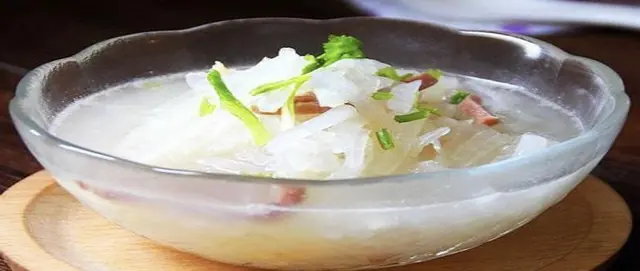
白萝卜丝清汤
来源于下厨房 · 99后两人生活记 · 虾米萝卜丝汤🦐 · 非商业转载说明
参考虾米版的萝卜丝切法和清汤颜色，小灶这道用素汤。
第 2 步 · 煮萝卜
小灶改为萝卜丝与清水同煮，不加榨菜。夹起时萝卜丝已能弯软、中心透亮，再尝汤调盐。
核对原页与实际步骤
下厨房 · 胖妻的厨房日记 · 美味白萝卜汤(没有异味的鲜汤)
作者把白萝卜擦丝，汤水先煮开，再下萝卜丝，最后调味。
App 步骤 萝卜丝与800毫升冷水同入锅，烧开转中小火，让汤持续轻滚。煮到萝卜半透明、夹起能弯软，尝一根应没有生硬辣口感，再进入调味。
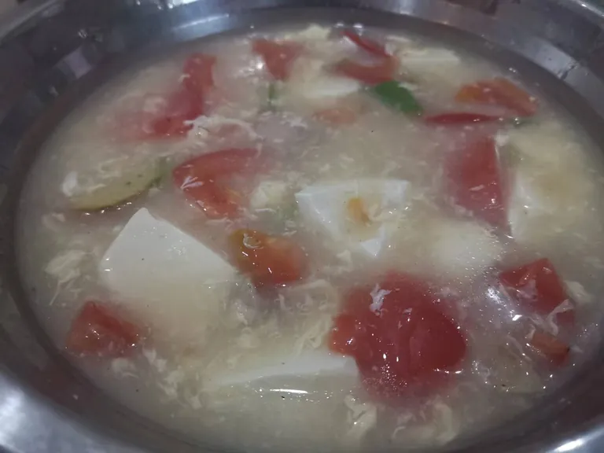
番茄豆腐蛋花羹
HowToCook 菜谱贡献者 · 西红柿豆腐汤羹 · Unlicense
第 2 步 · 煮番茄豆腐
本版省去原方菌菇。豆腐轻轻滑入汤里，用勺背沿锅边推开，薄芡分次加。
核对原页与实际步骤
下厨房 · 春暖花开9628wm · 番茄豆腐鸡蛋汤
原方先炒出番茄汁再加热水，汤滚后放豆腐，另调淀粉和蛋液。
App 步骤 少油中火炒番茄，有姜先炒香。番茄出汁变软后加350毫升水煮开，豆腐沿碗边轻轻滑入；改小滚，汤勺推锅底而不翻砸豆腐，煮到豆腐中心热透。
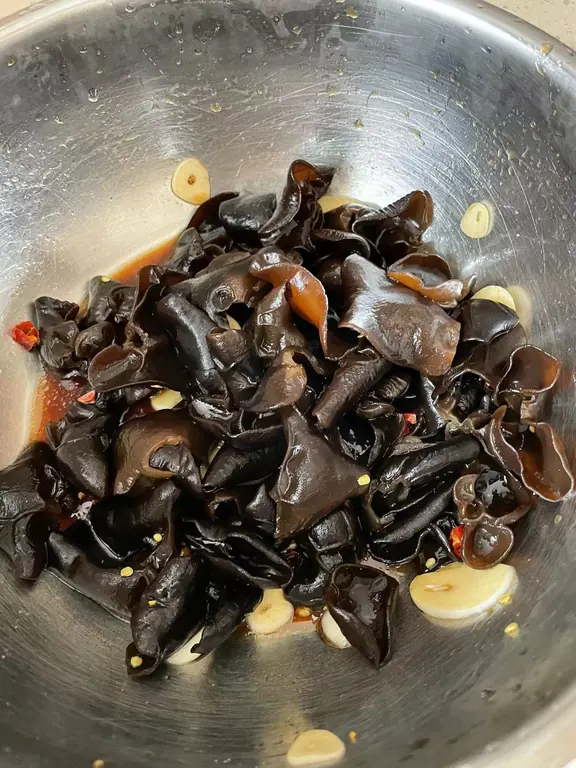
凉拌木耳
HowToCook 菜谱贡献者 · 凉拌木耳 · Unlicense
第 1 步 · 处理木耳
参考先煮后拌；泡发、冷藏与异常丢弃按下方食安中心指引处理，原站短时间煮制不作为所有木耳的熟度保证。
核对原页与实际步骤
下厨房 · 妮妮Ameile · 凉拌木耳
木耳泡发后煮制，沥水再与调料拌匀。
App 步骤 只用按包装新近泡发的木耳，先冲洗再用干净容器泡。室温泡发一般不超过 2 小时，需更久就冷藏；不要隔夜放室温。泡好去硬根、洗净沙粒并尽快烹煮，别泡好又放桌面等几小时。黏滑、有异味或存放情况不清楚的不用。
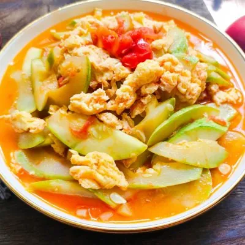
西葫芦炒鸡蛋
HowToCook 菜谱贡献者 · 西葫芦炒鸡蛋 · Unlicense
第 4 步 · 合锅
本版保留可选番茄；按瓜片软硬判断回蛋时机，不要求两分钟内炒熟。
核对原页与实际步骤
下厨房 · 随心煮意 · 西葫芦炒鸡蛋
瓜切半月薄片，鸡蛋炒成块先盛出，最后合锅。
App 步骤 先看菜汁，很多就先把汁略收一点，再放回鸡蛋轻翻。蛋液完全凝固、整锅热透后尝味补盐，立即盛出；不用让蛋陪西葫芦一直煮。
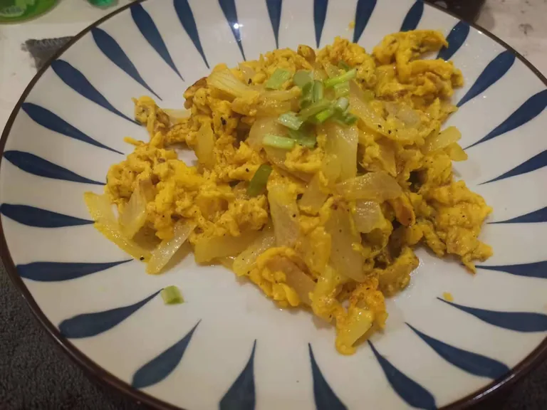
洋葱炒鸡蛋
HowToCook 菜谱贡献者 · 洋葱炒鸡蛋 · Unlicense
第 1 步 · 拌蛋
本版采用洋葱与蛋同锅的做法，所以切得更薄。想吃更软的洋葱，可以先把洋葱单独炒软。
核对原页与实际步骤
下厨房 · 家常小菜6346 · 超级简单的洋葱炒鸡蛋
洋葱切丝；作者先摊蛋盛出，洋葱炒软后再合锅。
App 步骤 洋葱顺着切面切薄片，再横切成短丝，避免长丝缠在锅铲上，越厚越难和蛋一起熟。鸡蛋在碗里打散，加一小撮盐，拌入洋葱；有葱就切好备用。生蛋碗不要用来装炒好的菜。
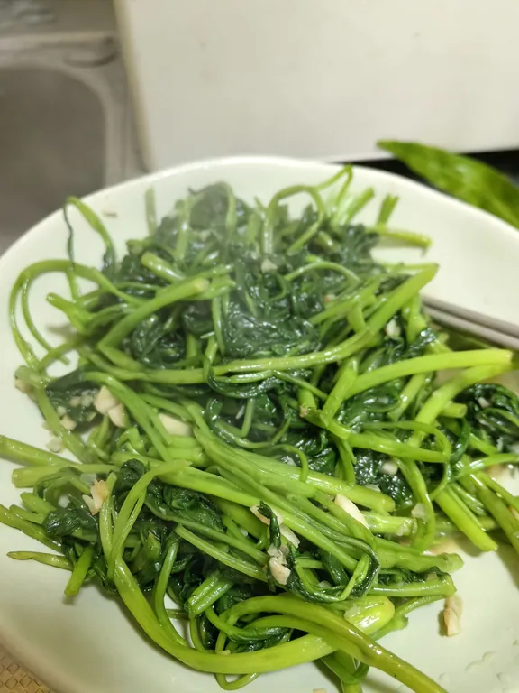
蒜蓉空心菜
HowToCook 菜谱贡献者 · 蒜蓉空心菜 · Unlicense
第 2 步 · 炒蒜下菜
粗梗切短或纵剖，趁蒜末刚出香时先炒梗；叶片最后翻入，软下来就检查梗是否熟透。
核对原页与实际步骤
下厨房 · Forever_良和 · 蒜蓉空心菜
作者将空心菜梗叶分开，先炒蒜和菜梗，再下叶片。
App 步骤 锅放油，小火下蒜末，刚有蒜香、颜色还浅就下菜梗，转中大火翻炒。梗稍变色后再下叶，分次翻到锅底，不把满锅菜压成一团。
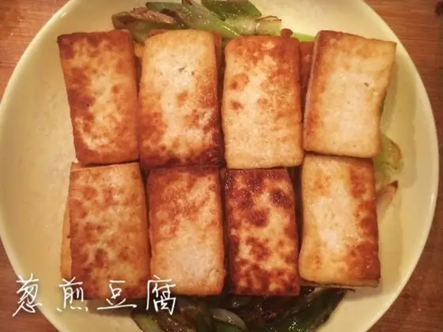
葱煎豆腐
来源于下厨房 · 贺子楠_ · 葱煎豆腐 · 非商业转载说明
第 2 步 · 煎豆腐
豆腐沥干后单层摆好。用铲尖推一下底边，能轻松移动时再翻，可减少粘锅和碎裂。
核对原页与实际步骤
下厨房 · 贺子楠_ · 葱煎豆腐
原方将豆腐切厚块，小火煎黄后夹出，葱段炒香再与豆腐合拢。
App 步骤 不粘平底锅放约 1 汤匙油铺成薄膜，小火到中小火，豆腐单层放入。先别推，等边缘微黄、轻推能移动，再用宽铲托住翻面；两面金黄即可，不必煎到硬壳。
小米粥
来源于下厨房 · 80后男人的厨房 · 小米粥 · 非商业转载说明
第 3 步 · 慢熬
小灶按米粒软烂程度停火。泡米与否、锅的厚薄都会影响用时，锅底开始粘时降火并轻搅。
核对原页与实际步骤
下厨房 · 80后男人的厨房 · 小米粥
作者水开下小米，小火留缝慢煮，中途搅动让粥渐稠。
App 步骤 转中小火，锅盖留缝，维持轻轻冒泡，慢煮约15–20分钟，其间不时搅底。米粒胀软、舀起不再硬砂感才好；未软就继续煮，水少补热水。关火后还会变稠，别急着收得太干。
水煮玉米
OnionBulb · BoiledCornOnTheCob20211211.jpg · CC BY-SA 4.0
第 3 步 · 检查熟度
先确认是甜玉米还是糯玉米；夹出一穗稍凉，取中段一粒检查芯的软硬，按口感续煮。
核对原页与实际步骤
下厨房 · 0047_u137 · 水煮玉米
原方留少量内层苞叶，加水盖过玉米煮，依嫩老调整时间。
App 步骤 夹出一根放稳，取粒稍放凉尝软度：熟透应无生硬粉芯，甜玉米爽脆、糯玉米柔韧，不要求同一种口感。未熟放回续煮，熟了沥水，晾到不烫口再吃。
清蒸鲈鱼
HowToCook 菜谱贡献者 · 清蒸鲈鱼 · Unlicense
第 3 步 · 淋汁
采用换新葱丝的做法。原方按约 500 克的鱼估时，小灶按最厚处检查熟度；淋热油可省。
核对原页与实际步骤
美食天下 · 小董妞@厨房 · 年年有鱼（余）——清蒸鲈鱼
葱姜分两份，第一份随鱼蒸，另一份在出锅调味时使用。
App 步骤 熟后用隔热手套稳稳取盘，先夹掉蒸过的葱姜，再用勺舀走盘边多余的蒸汁；盘子平放，鱼身不容易滑动。少量淋蒸鱼豉油，先留一半免得咸；摆上干爽的新葱姜丝。可小火温热少量油后小心淋上，不烧到冒烟；怕溅油就直接省略，尝一口鱼再决定补不补豉油。
蚝油生菜
来源于下厨房 · 安妮拉就是我 · 快手蚝油生菜 · 非商业转载说明
第 2 步 · 焯熟
只借鉴分批与菜汁分做；本版用沸水焯熟，不照搬 80–90°C 关火短烫，也不把多种咸味料全加进去。
核对原页与实际步骤
下厨房 · 小美的美食 · 家常菜 蚝油生菜
生菜分批处理后沥水，蒜香酱汁另做再淋。
App 步骤 水烧开后加几滴油，生菜分批放入，轻压让叶梗都接触热水。焯到叶片塌软、厚梗熟而还能弯折，立即捞出充分沥水放干净盘，不让菜泡在焯水里。
菠菜炒鸡蛋
HowToCook 菜谱贡献者 · 菠菜炒鸡蛋 · Unlicense
第 1 步 · 焯菠菜
焯好的菠菜先沥水切短。等蛋块已定形才合锅，可避免积水稀释蛋液。
核对原页与实际步骤
下厨房 · pepperandpineapple · 菠菜炒鸡蛋
原作者先焯菠菜，另炒蛋，再把菠菜放回锅合炒。
App 步骤 菠菜掰开洗净根部泥沙，切掉老根。沸水中先放梗再压入叶，焯到梗叶变软，捞出沥干，稍凉后轻挤余水、切短。鸡蛋加一小撮盐打散，另备干净盘。
苦瓜炒鸡蛋
来源于下厨房 · 滑冰的鸡蛋黄- · 苦瓜炒鸡蛋🥚 · 非商业转载说明
第 1 步 · 处理苦瓜
本版选择焯水这一条路线，瓜片沥干再炒；不用把盐腌和焯水的用量叠加。
核对原页与实际步骤
下厨房 · 滑冰的鸡蛋黄- · 苦瓜炒鸡蛋🥚
作者剔去苦瓜籽瓤，并列出盐腌冲洗或沸水处理两种做法。
App 步骤 苦瓜纵切，刮去籽和白瓤，切薄片。沸水焯到颜色变亮、片能弯折，捞出沥干，减少苦味也更容易炒匀。鸡蛋加一小撮盐打散；有葱切碎，备干净盘。
清炒莴笋
来源于下厨房 · Lark · 〖清炒莴笋〗｜超美味的家常菜做法 · 非商业转载说明
第 3 步 · 快炒
小灶先短腌莴笋后沥水，炒熟后再尝；已有底味时最后的盐只需少量。
核对原页与实际步骤
下厨房 · Lark · 〖清炒莴笋〗｜超美味的家常菜做法
原方先炒香蒜末和椒，再下莴笋快炒，最后调味。
App 步骤 锅热放油，中大火下莴笋摊开翻炒，炒到颜色更透亮、最厚片熟透而仍脆。先尝一片再决定补不补盐，熟了立即盛出，别为等焦边一直炒。
清炒藕片
来源于下厨房 · 不是厨子的煮夫 · 清炒藕片 · 非商业转载说明
第 1 步 · 切藕
本版省去另锅焯水，用锅里少量水焖熟；藕片先切成相近厚度，洗掉淀粉并沥干。
核对原页与实际步骤
下厨房 · 不是厨子的煮夫 · 清炒藕片
作者把藕切片后淘洗表面淀粉，再焯水、翻炒。
App 步骤 莲藕去皮，冲净孔洞里的泥沙，切成厚薄相近的薄片，清水快速冲掉表面淀粉后沥干。先把水和盐放手边；有姜葱再切好。
清炒绿豆芽
来源于下厨房 · 张记小灶 · 脆嫩爆炒绿豆芽｜不出水不软烂 快手家常菜 · 非商业转载说明
第 2 步 · 炒熟
将锅底与上层豆芽翻换，让整锅充分受热；锅小就分批，不照搬原作者的快炒分钟数。
核对原页与实际步骤
下厨房 · 张记小灶 · 脆嫩爆炒绿豆芽｜不出水不软烂 快手家常菜
原方先把豆芽沥干，炒香配料后才倒豆芽，下锅后持续翻动。
App 步骤 热锅放油，中大火下豆芽，摊开并不断把底部翻到上面。量大分批炒，不只烫表面；持续加热到豆芽全部软下来、每处都滚烫，没有生硬豆腥。脆感可以留，但不能为了脆而半生出锅。
韭菜炒豆芽
来源于下厨房 · 厦门媳妇山城妹 · 韭菜炒豆芽 · 非商业转载说明
第 2 步 · 炒蔬菜
豆芽先下锅翻匀，充分受热后再放韭菜；最后一起炒熟，韭菜更容易保留香味。
核对原页与实际步骤
下厨房 · 厦门媳妇山城妹 · 韭菜炒豆芽
作者先把豆芽炒软再拌入韭菜，利用两种菜自身的水分。
App 步骤 锅热放油，先下沥干的豆芽，中大火翻动，把底部和上层不断换位。等豆芽均匀受热、明显变软再放韭菜。锅小就分批，菜能在锅里翻开。
白菜炖豆腐
来源于下厨房 · 多乐妈妈 · 白菜炖豆腐 · 非商业转载说明
原作者用调味汁炖白菜豆腐，成品颜色较深，小灶做法较清淡。
第 3 步 · 再炖白菜
本版走清炖路线，豆腐先小火炖，白菜帮先于叶入锅。用勺背轻推，避免把豆腐翻散。
核对原页与实际步骤
下厨房 · 多乐妈妈 · 白菜炖豆腐
原方先煎豆腐，炒软白菜后加入豆腐和料汁同炖。
App 步骤 先下白菜帮，略煮软后压入菜叶，参考再炖约 5 分钟。最厚菜帮能轻松咬断、豆腐中心热透才完成，不够软就继续煮；关火前尝汤少量加盐，盛时用勺托底。
家常麻婆豆腐
HowToCook 菜谱贡献者 · 麻婆豆腐 · Unlicense
第 2 步 · 炒底料
借鉴酱料处理和轻推豆腐；不照搬麻辣香锅复合调料。本版老豆腐、可省肉末与淀粉，是家常简化版，不宣称正宗或完整复刻。
核对原页与实际步骤
下厨房 · 奚姥姥 · 麻婆豆腐
豆瓣酱先切细，肉末与调料炒香，豆腐少翻动，末段以水淀粉收稠。
App 步骤 锅中放油，中火把可选牛肉末拨散炒熟，用食品温度计确认中心至少71°C；不用肉就从本步炒豆瓣酱开始。转小火下少量豆瓣酱，炒到油带红色、闻到酱香就加水，不炒成黑渣。半碗水先加大部分，煮开形成能围住豆腐的汤汁。
皮蛋豆腐
Tbatb · Tofu with Century Egg 01.jpg · CC BY-SA 4.0
第 1 步 · 准备豆腐
先按豆腐包装确认食用方式，需要加热的先煮透；沥水放凉后再摆盘淋汁。
核对原页与实际步骤
下厨房 · 斯佳丽 · 皮蛋豆腐
作者分别切豆腐和皮蛋，码在盘中，最后淋预先调好的汁。
App 步骤 先看嫩豆腐包装是否可直接食用、是否需加热，再按包装指示开封取出。需要加热的按说明煮熟，不确定就先煮熟；不把“嫩”当成即食。沥去水分，轻轻放进干净盘，碎成块也不影响吃。
凉拌金针菇
ulterior epicure · Cold enoki mushroom salad · CC BY-NC-ND
第 2 步 · 煮熟
菇团拆成细束再下沸水，确保全部彻底加热。沥干再淋汁，不用原方的固定短焯时间判断熟度。
核对原页与实际步骤
下厨房 · NB轮回 · 凉拌金针菇
原作者先煮金针菇等配菜，捞出后才与凉拌汁拌合。
App 步骤 足量水烧开再放菇，拨散让所有菌菇浸在沸水中。水重新沸腾后先按约 2 分钟提醒检查，遵守包装要求，继续煮到每束充分熟透；大团必须拆散，计时不代表安全，金针菇不能生食。
清蒸茄子
来源于下厨房 · 小米爱吃米 · 家常清蒸茄子 · 非商业转载说明
第 2 步 · 蒸软
茄块厚度尽量一致，用筷子戳最厚处；中心柔软后就能轻撕成条，调味汁分次拌。
核对原页与实际步骤
下厨房 · 小米爱吃米 · 家常清蒸茄子
原方把茄子剖开，水开后入锅蒸，蒸软才撕条淋汁。
App 步骤 蒸锅加足水烧开，放稳盘子，盖好保持蒸汽不断。蒸到最厚处筷子能轻松穿透、内部没有硬白芯；只看外皮皱了不够。取盘避开蒸汽，倒去明显积水但留一点茄汁。
茄子炖土豆
来源于下厨房 · 夏小冷 · 茄子炖土豆（东北详细版） · 非商业转载说明
第 3 步 · 炖软
本版保留块形。焖到筷子能轻易穿过最厚土豆块再收汁，用勺背轻推茄子。
核对原页与实际步骤
下厨房 · 夏小冷 · 茄子炖土豆（东北详细版）
原作者把茄子先炒软，放入土豆加水同炖，末段还会压成泥。
App 步骤 加水到接近没过食材，煮开转小火盖好，让汤轻轻咕嘟。间或翻底，水少了但土豆还硬就补热水。到筷子能轻松穿过最大土豆块、茄子轻压就软再开盖。有蒜收尾放入煮出香气，尝熟汤再补少许生抽；留些稠汤拌饭，不必炖到全干。
清炒丝瓜
来源于下厨房 · 向你扔了一坨放心肉 · 清炒丝瓜🥒 · 非商业转载说明
第 3 步 · 加水煮软
锅底出现瓜汁后先停加水，观察最厚块的中心是否柔软。菜汁多时开盖稍收再调味。
核对原页与实际步骤
下厨房 · 向你扔了一坨放心肉 · 清炒丝瓜🥒
原方将丝瓜削皮切块，中火翻炒至自身出水，再按软度出锅。
App 步骤 沿锅边先加一小口热水，中小火煮约 4 分钟起检查。最厚块熟软、轻压能分开即可，水干而芯还硬就少量补水再煮；最后加一小撮盐翻匀，尝味发现异常苦味整份丢弃。
丝瓜炒鸡蛋
来源于下厨房 · 咖喱咖喱耶 · 丝瓜炒鸡蛋（家常菜） · 非商业转载说明
第 3 步 · 合炒
小灶先让瓜条熟软，汤汁过多先略收，再放回蛋块轻拌，这样两者都能保持口感。
核对原页与实际步骤
下厨房 · 咖喱咖喱耶 · 丝瓜炒鸡蛋（家常菜）
作者先煎蛋盛出，底油炒丝瓜，再加回鸡蛋一起完成加热。
App 步骤 锅留底油，中火炒丝瓜，边缘透亮后若锅干就补一小口水，煮到最厚条熟软。先让过多汁水稍收，再回锅鸡蛋轻翻热透，少量补盐；有葱最后撒，发现丝瓜异常苦味则整份丢弃。
蒜蓉蒸金针菇
来源于下厨房 · E路拾缘 · 蒜蓉蒸金针菇 · 非商业转载说明
第 2 步 · 炒蒜蓉
蒜末闻到香味就离火，薄铺到拆散的菇束上；蒸到全熟后再用盘汁调味，避免蒜蓉发苦。
核对原页与实际步骤
下厨房 · E路拾缘 · 蒜蓉蒸金针菇
原方沥干金针菇，利用锅中余温炒香蒜末，再把蒜蓉铺在菇上蒸。
App 步骤 小锅放少许油，小火下蒜末，慢慢翻到出香味、颜色仍浅就关小火，加入少量生抽拌匀。小米辣可同炒，不吃辣省略；蒜汁均匀铺在菇上，别只堆中心。
豆豉鲮鱼油麦菜
HowToCook 菜谱贡献者 · 豆豉鲮鱼油麦菜 · Unlicense
第 1 步 · 备菜去刺
先检查大块鱼肉的硬骨，豆豉分次放；本版菜叶先炒熟再合罐头，最后尝味决定是否加盐。
核对原页与实际步骤
下厨房 · -孙小碗- · 豆豉鲮鱼油麦菜
作者先挑掉鲮鱼中间的骨头、掰成小块，并留用罐头里的豆豉。
App 步骤 油麦菜逐片洗净沥干，切好夹的段，粗梗和叶分开放。罐头先看包装正常、未胀罐漏液，打开后检查并拣出明显硬刺，鱼分小块；不要默认罐头鱼完全无刺。有蒜切末。
土豆片炒肉
HowToCook 菜谱贡献者 · 瘦肉土豆片 · Unlicense
第 1 步 · 切配
小灶把土豆先短焯再合肉，切片尽量一样厚，能弯而不碎时捞出，避免与肉片久炒。
核对原页与实际步骤
下厨房 · 飞翔吧咏儿 · 土豆片炒肉
作者把土豆切成薄片并冲洗表面淀粉，再与薄肉片炒熟。
App 步骤 土豆去皮切约2毫米薄片，厚薄接近就行；蒜苗有则切段。肉切薄片，拌部分生抽，有淀粉薄薄裹一层，冷藏腌约10分钟。先切菜再用生肉专用刀板切肉，最后洗净手和用具。
黄瓜炒肉
来源于下厨房 · athe · 黄瓜炒肉 · 非商业转载说明
第 3 步 · 炒黄瓜
本版直接用鲜瓜片，先沥干表面水。肉片确认熟透再加瓜片，只需炒到瓜边略软即可盛出。
核对原页与实际步骤
下厨房 · athe · 黄瓜炒肉
原方黄瓜盐腌后挤水，肉先炒出锅，快炒黄瓜后让肉回锅。
App 步骤 肉熟后下黄瓜，翻到每片沾上肉汁、边缘稍软但中间仍脆爽即可；别让黄瓜陪肉煮很久。尝一片熟肉与黄瓜，再决定是否补一小撮盐。黄瓜出一点汁正常，够味就出锅，不用炒到干巴巴。
洋葱炒肉片
来源于下厨房 · 晏。 · 洋葱炒肉（甜面酱版） · 非商业转载说明
作者用甜面酱炒洋葱和猪肉，颜色较深。小灶用生抽调味。
第 3 步 · 炒洋葱合锅
本版按洋葱的软度决定合锅时机，肉片已熟只需回温；甜面酱不是本版必需调料。
核对原页与实际步骤
下厨房 · 狗尾巴草 · 洋葱小炒肉
原方先炒肉片盛出，洋葱丝变软、边缘透亮时再加肉回锅。
App 步骤 原锅用余油炒洋葱，到片子柔软、边缘半透明且闻到甜香，再少量淋生抽。想更甜软就中小火多翻一会儿，不用强求焦边。放回熟肉拌热，黑胡椒、番茄酱有且喜欢再少加；尝后调整，酱能润住洋葱就关火。
青椒炒肉
来源于下厨房 · 酸奶口味 · 青椒炒肉 · 非商业转载说明
第 2 步 · 先煸青椒
本版先煸青椒再炒肉，青椒表面起皱就盛出；留意辣椒厚度，按实际状态调整火候。
核对原页与实际步骤
下厨房 · 酸奶口味 · 青椒炒肉
原作者把五花肉与青椒分别煎煸，看到椒皮有焦斑后回锅调味。
App 步骤 青椒下锅中小火翻动、轻压，让它变软并出现少量浅褐斑就先盛出。用不粘锅时抹一层薄油，不空锅干烧，也不追求满皮焦黑。厚肉椒需要久一点，薄皮椒更快。
香菇蒸鸡
来源于下厨房 · 番茄无心 · 广东传统家常菜:香菇蒸鸡 · 非商业转载说明
香菇与鸡肉蒸熟后的装盘参考，原作者另加了红枣等配料。
第 2 步 · 铺盘蒸
本版用鲜香菇与去骨鸡腿，不沿用冲洗生鸡或固定 15–20 分钟即可熟的假设；蒸后测几块最大鸡肉中心，均到 74°C 才取出。
核对原页与实际步骤
下厨房 · EllieKongSG · 广式家常菜香菇蒸鸡，鲜嫩又方便百吃不厌
宽浅盘单层平铺，避免鸡块重叠，开水上锅。
App 步骤 鸡肉和香菇在耐热浅盘单层摊开，鸡块不重叠，不堆成小山；中间略薄，香菇别整层压住鸡肉。蒸锅水开且蒸汽足后入盘，盖好持续蒸，先设15分钟提醒。盘厚、肉块大需更久；查看水位，补水沿锅边加热水，别淋进鸡盘。
肉饼炖蛋
来源于下厨房 · 绯喵喵 · 肉饼炖蛋 · 非商业转载说明
第 2 步 · 铺成薄饼
肉饼铺成均匀薄层，压窝时把四周的厚肉摊开；出锅前测最厚肉心并确认鸡蛋全熟。
核对原页与实际步骤
下厨房 · 绯喵喵 · 肉饼炖蛋
作者把拌好的肉末铺平，在中间压出浅窝打蛋，再入蒸锅。
App 步骤 用宽浅耐热盘把肉馅铺成厚薄均匀的薄饼，约一厘米上下即可，不堆厚。中间压一个浅窝，打入另一个蛋，别把肉挤成四周很厚的墙；饼面不平也不影响吃。
荷兰豆炒腊肠
HowToCook 菜谱贡献者 · 荷兰豆炒腊肠 · Unlicense
第 3 步 · 炒匀
确认腊肠包装要求，生制品先按说明做熟。荷兰豆全熟后再合锅，先尝腊肠咸味再决定是否补盐。
核对原页与实际步骤
下厨房 · pepperandpineapple · 荷兰豆炒腊肠
原方先焯荷兰豆，腊肠斜切薄片炒香，再把荷兰豆倒回锅中。
App 步骤 锅中薄油，小火炒熟腊肠，到香气出来、边缘略卷就下荷兰豆。中火翻到整锅热透，腊肠的油香均匀裹在豆荚上就停。先尝豆荚和腊肠一起的味道，缺味才少量加生抽，通常不再放盐。
冬瓜虾皮汤
来源于下厨房 · 透明小果冻 · 冬瓜虾皮汤 · 非商业转载说明
第 2 步 · 炒后加水
汤底保留虾皮香味，略炒出香就加水；瓜片厚薄均匀，待中心也透亮再尝汤调盐。
核对原页与实际步骤
下厨房 · 透明小果冻 · 冬瓜虾皮汤
作者将冬瓜去皮去瓤切薄，先炒香虾皮，再加水煮瓜片。
App 步骤 锅中少油中小火炒虾皮，有姜一同放，闻到香味就放冬瓜翻匀，不把虾皮煎焦。加约1–2碗水煮开，水量够喝就行。
黄瓜皮蛋汤
来源于下厨房 · 胃你够了 · 黄瓜皮蛋汤 · 非商业转载说明
第 2 步 · 煎香煮汤
皮蛋底边定形再轻轻翻。热水沿锅边慢慢倒，等汤底有味再下瓜片，保留清爽口感。
核对原页与实际步骤
下厨房 · sissith · 黄瓜皮蛋汤
原方将皮蛋切瓣小火略煎，添热水煮汤，黄瓜在后段加入。
App 步骤 锅中油中小火加热，下皮蛋让表面略定形再翻，有蒜一起短煎出香，蒜不要煎黑。沿锅边慢慢加约500毫升水，避开蒸汽，煮开。
金针菇清汤
webmasterHCS · enoki-egg-drop-soup · CC BY-SA
金针菇蛋花清汤实拍，参考加蛋版本。作者撒了少量葱花。
第 2 步 · 煮熟菌菇
本版去掉番茄底，将拆散的菇束与清水同煮，确保每束都浸在汤里。全锅持续受热、菇束彻底熟透后调味。
核对原页与实际步骤
下厨房 · 心灵手巧常 · 🔥低脂低卡好喝到爆炸的番茄金针菇汤
参考番茄金针菇汤里煮菇的次序：先让汤滚，再放去根的金针菇煮软。
App 步骤 菇和水入锅煮开，拨松让每一撮都浸在汤中。重新沸腾后约3分钟起检查，持续加热至全熟；时间只是提醒，不能用刚倒入的热汤烫一下代替煮。
玉米排骨汤
HowToCook 菜谱贡献者 · 玉米排骨汤 · Unlicense
第 2 步 · 慢炖
本版把玉米和焯过的排骨一同炖，汤面持续冒小泡。排骨软烂、玉米芯附近的籽粒煮透再调味。
核对原页与实际步骤
下厨房 · 云卷云姝 · 排骨玉米汤
作者排骨冷水下锅焯水、撇沫，换水炖排骨，中途再放鲜玉米。
App 步骤 排骨玉米放汤锅，加约1升热水煮开后转小火，只保持小泡连续冒出。先炖约20分钟，盖子留适当缝，期间检查水量，快露出食材时补热水，不让烧干。
海带豆腐汤
来源于下厨房 · 大栾栾 · 海带豆腐汤 · 非商业转载说明
原作者的海带豆腐汤另加虾仁等配料；这里参考海带与豆腐的大小和汤色。
第 3 步 · 煮豆腐
小灶省去虾仁。试一片厚海带是否已软；再把豆腐轻轻滑入汤里，保持微滚让中心热透。
核对原页与实际步骤
下厨房 · 大栾栾 · 海带豆腐汤
原作者把泡发海带切段，水开后先入海带，再放内酯豆腐。
App 步骤 豆腐沿碗边滑入，轻推而不猛翻，约10分钟起检查：海带能咬断、豆腐中心热透。厚海带按包装延长，豆腐已经热可先盛出。最后尝汤再少量加盐，有葱再撒。
昂刺鱼豆腐汤
HowToCook 菜谱贡献者 · 昂刺鱼豆腐汤 · Unlicense
第 2 步 · 煎后煮汤
鱼表面擦干、下锅摊稳，底面能推动再翻。加汤后减少翻动，到点检查厚处鱼肉，别只看汤色。
核对原页与实际步骤
下厨房 · 西柚 · 昂刺鱼炖豆腐
作者让店家处理昂刺鱼，先小火将鱼的两面略煎，再和豆腐加水同炖。
App 步骤 锅中放油中火加热，鱼轻放入后先别推动，表面定形能松动再翻面，有姜一起煎香。沿边慢慢加约1升热水，避开溅油，保持沸腾约10分钟，留意水量；不用把不粘锅空烧冒烟。
番茄炒虾仁
来源于下厨房 · 糯米小桃子酱 · 番茄虾仁 · 非商业转载说明
第 3 步 · 炒番茄合锅
把时间留给番茄。虾仁已炒熟后先等在干净盘里，汤汁能挂住锅铲时再回锅裹汁。
核对原页与实际步骤
下厨房 · 糯米小桃子酱 · 番茄虾仁
作者先炒虾盛起，再把番茄丁边压边炒出汁，最后让虾回锅。
App 步骤 原锅少油，小火炒香可选蒜末，再中火炒番茄，加一小撮盐帮助出汁。到丁块塌软、铲子轻压能出红汁，偏干补一两汤匙水；汁太稀先煮浓。熟虾回锅拌匀热透，尝味后补盐，汁润着虾即可，不让虾长时间陪番茄收汁。
蒜蓉粉丝蒸娃娃菜
来源于下厨房 · 玥月superman · 蒜蓉粉丝蒸娃娃菜 · 非商业转载说明
第 2 步 · 摆盘
本版把厚菜帮切薄，粉丝铺松后淋入少量料汁和水；蒸好同时检查菜帮和盘底粉丝的软硬。
核对原页与实际步骤
下厨房 · 玥月superman · 蒜蓉粉丝蒸娃娃菜
原方把粉丝泡开，娃娃菜切瓣，摆盘后浇蒜蓉调汁一起蒸。
App 步骤 菜帮和叶薄薄铺在粉丝上，不压成厚实一堆。撒蒜末，淋少许油，生抽先淋少量；若粉丝已沥得很干，沿盘边加一两汤匙清水帮助受热，别让整盘漂在水里。
清蒸红薯
GeorgeTan#5 · Simple breakfast - steamed sweet potatoes · CC CC0
第 2 步 · 蒸红薯
小灶使用普通蒸锅，水面低于蒸架。选大小接近的红薯，最厚处也能轻松穿透时才出锅。
核对原页与实际步骤
下厨房 · 桃之灰灰 · 蒸红薯（红薯最营养的吃法——电高压锅版本）
原作者洗净红薯后，放在蒸架上，水加在蒸架下方，用电高压锅蒸。
App 步骤 蒸锅加足量水但不碰到红薯，水开后盖盖中火保持稳定蒸汽。设30分钟提醒检查，不是熟透保证；期间水不足需避开蒸汽补热水，不能干烧。
香菇鸡肉焖饭
来源于下厨房 · 日食记 · 〖香菇鸡肉焖饭〗 · 非商业转载说明
第 2 步 · 炒香配料
炒香鸡块后加入本版的香菇和可选蔬菜；鸡肉上色后还要继续随饭煮，开盖时检查鸡肉中心。
核对原页与实际步骤
下厨房 · 日食记 · 〖香菇鸡肉焖饭〗
原方将去骨鸡腿先和洋葱煸炒，加香菇、蔬菜和米，再交给电饭煲焖熟。
App 步骤 少油中火，有姜先炒香，鸡丁和香菇下锅拨散，有胡萝卜丁也一起下锅，炒到鸡肉外层变色、香菇变软出香。生抽先少量放；带少量汁铺在米上，不再随意加一碗水，也不把配料压实搅到底。外层变色不代表鸡心已熟。
土豆焖饭
来源于下厨房 · 此处是空城 · 土豆焖饭（电饭锅版） · 非商业转载说明
第 2 步 · 煎炒土豆
土豆只需煎出香味，随后与米一起焖熟。锅内水按电饭煲刻度，起锅前检查土豆中心。
核对原页与实际步骤
下厨房 · 此处是空城 · 土豆焖饭（电饭锅版）
原作者将土豆切成小块并沥干，先在炒锅将边角煎黄，再与生米同煮。
App 步骤 少油中火炒土豆，有葱姜可先炒香。炒到表面出现几处浅金黄色即可，不要求每一面都上色；盐先少量加，生抽喜欢再放，避免焦黑。
南瓜粥
来源于下厨房 · 丽丽娟子的美食 · 小美版养生小米南瓜粥 · 非商业转载说明
原图用小米煮南瓜；本版以大米为主，小米可选，粥粒会稍大。
第 1 步 · 准备谷物
本版用普通锅，南瓜厚薄一致更易软。根据粥的稠度和瓜块的软度停火，不套用压力锅时间。
核对原页与实际步骤
下厨房 · 心灵做菜 · 南瓜粥（原味）
原方南瓜先切小块，再和洗净的米放进压力锅，利用南瓜本身的甜味。
App 步骤 大米淘洗，南瓜去皮去瓤切相近小丁；小米和去核红枣有且喜欢再备。按人数取米，普通锅加足量水并留沸腾空间，宁可稀些后收，别把锅装满。
鸡蛋面糊饼
来源于下厨房 · 长点肉吧 · 鸡蛋面糊饼 · 非商业转载说明
第 2 步 · 摊薄饼
小灶将蛋拌入面糊，用平底锅薄摊。面糊一次少舀，边缘能揭起、表面基本定形再翻。
核对原页与实际步骤
下厨房 · 长点肉吧 · 鸡蛋面糊饼
作者在电饼铛上刷薄油，舀入一勺面糊，刮平定形后再淋蛋。
App 步骤 平底锅薄刷油，中小火倒一小勺面糊，转锅或用勺背摊成薄层。边缘定形、表面由湿亮变暗、铲子能伸入底部时再翻；第一张小一点更好掌握。
懒人水煎饺
avlxyz · 煎饺 Fried dumplings - Shanghai Noodle AUD7.50 for 15.jpg · CC BY-SA 2.0
第 2 步 · 加水焖熟
先核对包装适用做法，按大小调整水和焖的时间。确认馅熟透后再开盖煎脆，底部颜色只说明上色。
核对原页与实际步骤
下厨房 · 3N的小披风 · 平底锅煎速冻饺子
作者把速冻饺子放入平底锅，先煎、加水盖焖，待水干再煎底。
App 步骤 按包装加水，通常约到饺子一半高，盖锅煮约8–10分钟起检查，10分钟提醒不是熟透保证。水不够时降火沿边小心补热水。用食品温度计测较大饺子馅心：猪牛肉末至少71°C，含鸡禽肉至少74°C；未达温继续盖锅加热。
皮蛋瘦肉粥
Peachyeung316 · A century eggs and Pork Congee from Chi Kee Congee Shop.jpg · CC BY-SA 4.0
第 3 步 · 检查调味
本版用电饭煲同煮，放肉时先抖开成团的肉丝；开盖既要看粥稠度，也要确认肉已热透。
核对原页与实际步骤
下厨房 · 尚食之文 · 皮蛋瘦肉粥
原作者把肉切丝并拨散、皮蛋切丁，等米粥变稠再将其合入粥中。
App 步骤 程序结束先看米粒是否软烂，用勺拆开肉丝团，确认内外熟透；用食品温度计确认这份含肉料理中心至少74°C。未达温重新有效加热。盐少量尝后补，有葱胡椒再加；稠了补热水后再煮开。
凉拌海带丝
来源于下厨房 · 岩岩爱吃肉 · 凉拌海带丝 · 非商业转载说明
第 2 步 · 煮海带
干海带、盐渍海带分别按包装泡发或脱盐，煮到合适软度再沥水；少量淋汁，尝完再补。
核对原页与实际步骤
下厨房 · 岩岩爱吃肉 · 凉拌海带丝
作者先泡发海带丝并煮制，捞出控水才拌蒜香料汁。
App 步骤 水沸后下已处理海带，拨散煮，先约 5 分钟起检查，并优先满足包装的煮制要求。厚丝继续煮到熟、咬得断又有韧性；用干净漏勺捞起沥水，不用生水冲凉。
清蒸山药
来源于下厨房 · 简单篮子 · 快手清蒸山药 · 非商业转载说明
第 2 步 · 蒸熟
小灶以普通蒸锅为准，按厚度切匀。筷子从最厚处穿进中心没有硬芯，才夹出装盘。
核对原页与实际步骤
下厨房 · 简单篮子 · 快手清蒸山药
原方把山药削皮切段装盘，可随饭蒸，也可水开后架在蒸锅中。
App 步骤 蒸锅加足水烧开，放稳盘子，盖好转到能保持蒸汽的火力，参考蒸约 30 分钟。中途留意水量，若需补水用热水并避开蒸汽，不能把锅烧干。
蒜蓉蒸丝瓜
来源于下厨房 · 高冷鱼大人 · 〖广东家常菜〗脆嫩爽口的蒜蓉蒸丝瓜，真的绝绝子！ · 非商业转载说明
第 2 步 · 摆盘调味
本版可直接用碎蒜铺盘，分散在大小接近的丝瓜块上，每块都有蒜香；厚块仍要检查熟度。
核对原页与实际步骤
下厨房 · 高冷鱼大人 · 〖广东家常菜〗脆嫩爽口的蒜蓉蒸丝瓜，真的绝绝子！
原方把蒜切碎，一半先炒香再拌余下的蒜，分放在丝瓜上蒸。
App 步骤 丝瓜平铺耐热盘，片间留点缝，蒜蓉分散铺上，均匀撒一小撮盐、淋少许油。别把盐集中在几片上，也不提前腌很久，以免出大量水。
香煎鸡胸肉
来源于下厨房 · 执剑踏云 · 香煎鸡胸肉 · 非商业转载说明
第 2 步 · 小火煎
把厚处片薄，留出间隙再煎。颜色用于决定翻面，出锅要测最厚部位中心达到 74°C。
核对原页与实际步骤
下厨房 · 执剑踏云 · 香煎鸡胸肉
作者把鸡胸切片腌味，平底锅刷薄油，小火煎到两面上色。
App 步骤 不粘锅放薄油，中小火到油可流动但不冒烟，下鸡片摊开留空隙，锅小分批。一面浅金黄、可轻推时翻面，继续温和加热；不要一直用铲子压挤肉汁。两面金黄只是外观，还要检查中心。
豉汁蒸排骨
bryan... from Taipei, Taiwan · Food 豉汁蒸排骨, 新葡苑, Shin Pu Yuan, 台北 (21531923392).jpg · CC BY-SA 2.0
第 2 步 · 铺盘蒸
同一盘骨块尽量一样大并单层摆放，避免中间堆高。豆豉本身咸，蒸熟尝味后再决定是否补盐。
核对原页与实际步骤
下厨房 · 梓晴 · 豉汁蒸排骨
原方将豆豉切碎拌小排骨，使用浅盘平铺，水烧开后上锅蒸。
App 步骤 排骨在耐热浅盘单层摆开，不叠在一起。水开、蒸汽足再放盘，盖好保持沸腾，先设20分钟提醒检查。大块需要更久；锅水将少沿边补热水，别烧干。蒸得久一些会更软，但不是到点就一定能吃。
清炒平菇
来源于下厨房 · 吼吼哈嘿嘿 · 超简单的清炒平菇 · 非商业转载说明
平菇炒软后的样子，原作者的版本另加了彩椒。
第 2 步 · 炒熟
小灶直接炒菇，薄撕成条，先让水汽逸出，再观察较厚菇柄是否熟软，最后才收汁。
核对原页与实际步骤
下厨房 · 吼吼哈嘿嘿 · 超简单的清炒平菇
原方把平菇先焯水沥干，再与蒜和蔬菜同炒。
App 步骤 锅放油，中小火炒蒜至有香味、未变褐，没有蒜直接下菇。转中火把菇拨散翻炒，出水后保持加热，翻到每片受热，直到菌柄也熟软、全部热透；不把刚塌软当作熟透。
凉拌豆腐皮
Gary Soup · Cucumber-tofu skin salad at China North Dumpling · CC BY
第 1 步 · 煮豆腐皮
按手中豆腐皮的品种和包装要求煮透；拌汁前沥去水，黄瓜丝最后合入，调味更均匀。
核对原页与实际步骤
下厨房 · 周周萌萌 · 凉拌千张
原方先把千张放进沸水煮，再沥水、切丝、调味。
App 步骤 先确认是本菜用的湿豆腐皮，不是需要长时间泡发的干腐竹；按包装处理后切细丝。水沸下锅，拨散煮约 3 分钟起检查，依包装继续煮到熟透、柔软；用干净漏勺捞出沥干，不用生水冲凉。